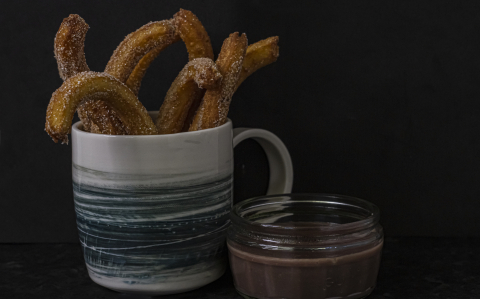

Hozzávalók
Elkészítés
Vissza a főmenübe
CHURROS
Könnyed édesség Mindenkinek.
Gyorsan és egyszerűen!

Hozzávalók
Tésztához:
200 g finomliszt
250 ml tej
100 g sótlan vaj
5 g cukor
3 egész FUCHS SZABADTARTÁSOS TOJÁS
Forgatáshoz:
50 g cukor
ízlés szerint fahéj
Sütéshez:
Étolaj 200 ml
Elkészítése
Egy gyorsforralóba öntjük a tejet, hozzáadjuk a vajat, a sót és 5 g cukrot. Felforraljuk.
Amikor felforrt, hozzáadjuk a lisztet, majd 5 percig kevergetjük. Csomómentesnek kell lennie, majd hagyjuk kihűlni.
A tojásokat felverjük, majd apránként a kihűlt tésztához keverjük.
Habzsákba töltjük, nagylyukú csillag alakú csövet használunk hozzá.
Kb 160 fokos, bő olajba nyomjuk a tésztát. Körülbelül 10 cm hosszúakat készítünk és egy kés segítségével levágjuk.
Sütés közben forgatjuk a fánkokat, majd papírtörlőre vagy szalvétára szedjük lecsepegni.
Fahéjas cukorba forgatjuk és csokoládépudinggal tálaljuk.